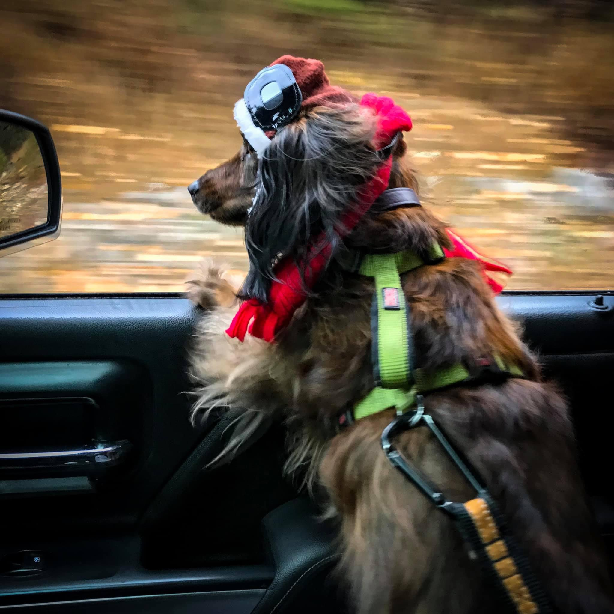

My Favorite Story
Bella The Dachshund
Sometimes we meet our best friends in the most random places and at the most random times. I met my best friend one evening on a backroad
outside of Dahlonega Georgia in July of 2015. At the time I was recovering from surgery to repair my labrum and was heading to my storage unit
after getting off duty as a Sheriff's Deputy and had no idea of what surprise would come.
While driving down this two-lane highway that is well traveled, I noticed a small dog in the road that was casuing some issues with traffic
as people were having to brake and go around this dog playing in traffic. I was pretty concerned that this pup was going to get hit, so I stopped.
I opened up my door and this little weiner dog came over to my vehicle and put her paws up on the running board with a look on her face like she had
been waiting on me. At the time I had no thought of having a dachshund around and didnt really know what to do with her. This poor little pup wasn't
too skinny, but she had been rolling in roadkill and was covered in fleas. Traffic was approaching from behind me so I picked up this long dog and we
had a brief moment of looking in each others eyes with some question of what was going on before putting her in my lap.
I attempted to find her owners even though someone had no care for her, luckily no one recognized her. One of the homes we visited was little shady
looking and was quite possible a meth cook house. Of course they didn't recognize the dog as I was in tactical pants, a t-shirt, and had my personal sidearm
holstered on my hip. Even if that was their dog, she didn't need that place. After striking out at the local homes I decided that I needed to get to my storage
unit before the sun went down. After the storage unit tasks were completed is when I realized my best friend was the shape of a hot dog with prime German
engineering. We were getting gas and she was in the back of my little SUV when she looked up at me so happily, almost if she was saying "please keep me", my heart
melted like butter on a hot Georgia day.
After taking her home that night and getting her cleaned, I had decided to get her to the vet in the next days to see if she was chipped and make sure
she had a clean bill of health. No chip was found and her health was good. The vet said she was around two years old and was in good running order. Now came the
daunting task of choosing a name which is always tough when it comes to pets, eventually the right name came to mind and she became my Bella.
In 2017 Bella and I moved to Montana (back for me) where we met many people, traveled many roads, and had a wonderful friendship. We met my fiancee'
(now wife) in 2018 and they became really close as well. This summer of 2020 my wife and I were to get married in July and I was glad that Bella and I had a
furever home and family; however, in June Bella became suddenly ill and not feeling so pawfect. We were hopeful that things were going to get better, but they
took a turn for the worst the week before the wedding. Unfortanetly, I had to say "until we meet again" to her two days before the wedding. She was given
a proper meal of chicken nuggets and icecream the night before our final car ride. That next day I held her, loved her, and told her "when you hear the volley
of the rifles and bugle calling out in my name, then it would be time to come find me past the rainbow bridge, on its sunny and grassy plains".


If you would like to contact us, click on the link
Contact us